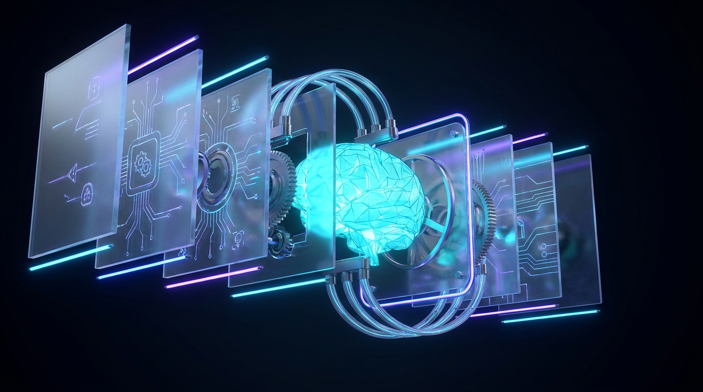

Why Open & Decentralized AI Matters
AI Without Gatekeepers
AI is becoming infrastructure — like cloud, databases, the internet. But a few companies control it.
Gatekeepers — or infrastructure for everyone?
02
Why Decentralized AI Matters
Centralized: one provider controls models, compute, APIs, data, availability, rules.
Decentralized: capabilities distributed across many independent participants.
- More resilience
- More choice
- Greater privacy
- Permissionless innovation
Not replacing — creating an alternative.
03
Open Source & Open Weights
Open source — inspect, modify, contribute.
Open weights — run and adapt the model.
- Run AI locally
- Customize for your needs
- Audit what you use
- Build without permission
- No provider lock-in
AI you build on — not just consume.

04
From Open AI to Decentralized AI
Open models aren't enough. You need compute, infrastructure, incentives.
Instead of one company owning the stack, independent participants contribute resources and get rewarded.
An open AI marketplace where anyone can participate.
05
Morpheus: An Example of DeAI
Open-source decentralized AI — private, sovereign, permissionless.
- Code — developers build agents
- Capital — incentives for participation
- Compute — GPU providers serve models
- Users — sovereign AI access
Decentralization gives us freedom to participate.